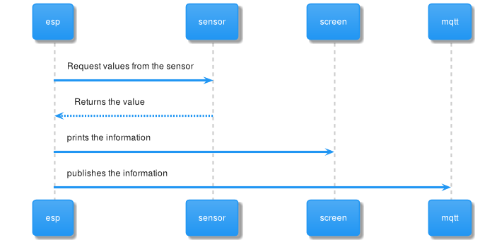
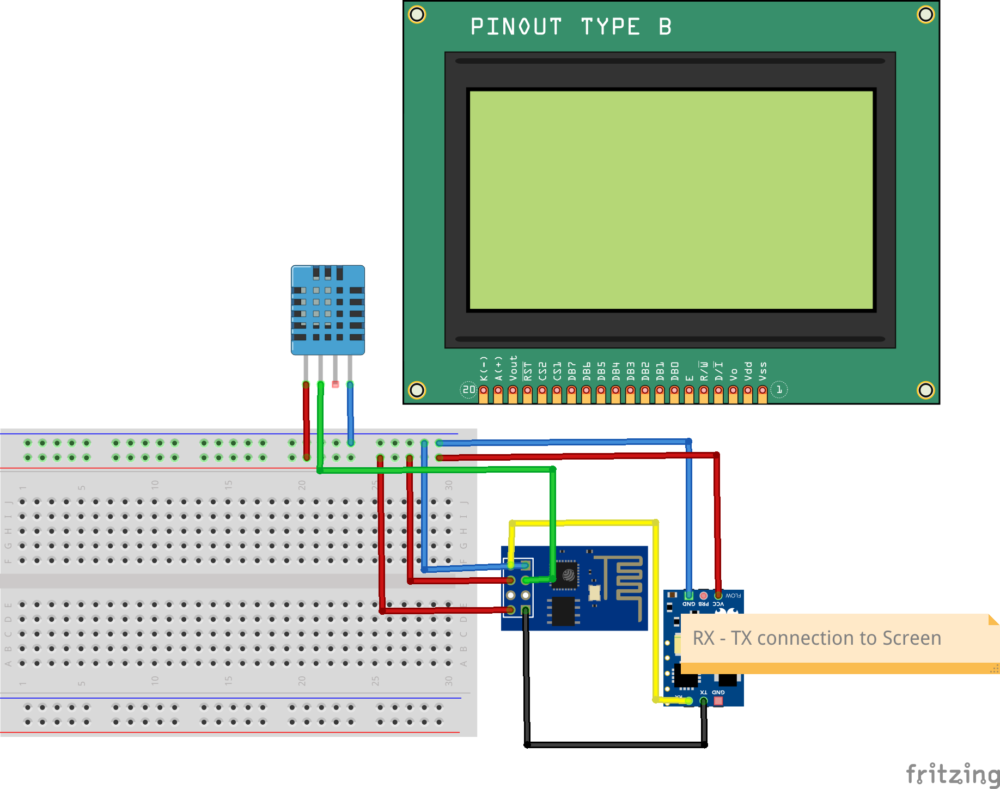

Dataproducer 1
Components
- Temperature and humidity sensor
- LCD screen
- ESP-01
Flux

Wiring

Bugs encountered
We put a cable in a pin on the breadboard that didn't work at all. We spend a couple of hours debugging it.
Code
#include "DHT.h"
#include <ESP8266WiFi.h>
#include <PubSubClient.h>
#define maxX 127//159
#define maxY 63 //127
const char* ssid = "ssid";
const char* password = "password";
const char* mqtt_server = "192.168.4.1";
WiFiClient espClient;
PubSubClient client(espClient);
unsigned long lastMsg = 0;
#define MSG_BUFFER_SIZE (50)
char msg[MSG_BUFFER_SIZE];
DHT dht(2, DHT11);
/* OUR FUNCTIONS */
void setup_wifi() {
delay(10);
WiFi.mode(WIFI_STA);
WiFi.begin(ssid, password);
while (WiFi.status() != WL_CONNECTED) {
delay(500);
}
randomSeed(micros());
}
void reconnect() {
// Loop until we're reconnected
while (!client.connected()) {
// Create a random client ID
String clientId = "ESP8266Client-";
clientId += String(random(0xffff), HEX);
// Attempt to connect
if (client.connect(clientId.c_str())) {
client.publish("debug","connected");
client.publish("outTopic", "hello world");
} else {
// Wait 5 seconds before retrying
delay(5000);
}
}
}
void setX(byte posX) //0-127 or 0-159 pixels
{
//Set the X position
Serial.write(0x7C);
Serial.write(0x18);//CTRL x
Serial.write(posX);
}
//-------------------------------------------------------------------------------------------
void clearScreen()
{
//clears the screen, you will use this a lot!
Serial.write(0x7C);
Serial.write((byte)0); //CTRL @
//can't send LCD.write(0) or LCD.write(0x00) because it's interprestted as a NULL
}
void setY(byte posY)//0-63 or 0-127 pixels
{
//Set the y position
Serial.write(0x7C);
Serial.write(0x19);//CTRL y
Serial.write(posY);
}
void setHome() {
setX((byte)0);
setY((byte)0);
}
void setup() {
setup_wifi();
client.setServer(mqtt_server, 1883);
dht.begin();
Serial.begin(115200);
delay(1200);
clearScreen();
setHome();//set the cursor back to 0,0.
delay(10);
Serial.print("Starting dataproducer1");
delay(1000);
Serial.print("Connecting to MQTT");
}
void tempAndHumidity(float tempC, float humidity, float heatIndex) {
//This function shows how you could read the data from a temerature and humidity
//sensor and then print that data to the Graphic LCD.
clearScreen();
//these could be varaibles instead of static numbers
Serial.print("Temperature = ");
Serial.print(tempC);
Serial.print("C ");
Serial.print("Humidity = ");
Serial.print(humidity);
Serial.print("% ");
Serial.print("Heat index = ");
Serial.print(heatIndex);
Serial.print("C ");
}
void loop() {
// put your main code here, to run repeatedly:
// Reading temperature or humidity takes about 250 milliseconds!
// Sensor readings may also be up to 2 seconds 'old' (its a very slow sensor)
if (!client.connected()) {
reconnect();
}
client.loop();
float h = dht.readHumidity();
// Read temperature as Celsius (the default)
float t = dht.readTemperature();
if (isnan(h) || isnan(t)) {
client.publish("debug","Failed to read from DHT sensor!");
} else {
float hic = dht.computeHeatIndex(t, h, false);
tempAndHumidity(t, h, hic);
unsigned long now = millis();
if (now - lastMsg > 2000) {
sprintf(msg, "{\"humidity\":%f,\"temperature\":%f,\"hic\":%f}", h, t, hic);
client.publish("debug", "Published message");
client.publish("debug","Publish message: ");
client.publish("debug",msg);
client.publish("windmill/dataproducer1", msg);
}
}
client.publish("debug", "Finished Message Sending");
// Compute heat index in Celsius (isFahreheit = false)
delay(2500);
}